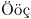

Contents
Introduction
The Unicode effort clearly shows that 256 characters cannot possibly contain the world's languages. However, traditional TeX is an old system, and will only deal with 256 characters per font. Similarly, "legacy" file encodings on current operating systems (e.g. Latin-1, Mac Roman, Windows 1252, ISO-8859-#) attempt to shoehorn a set of characters into eight bytes.
As a result, working with pdfTeX (MkII) you need to make a choice which input encoding (regime) or font/output encoding (encoding) you use.
Modern TeX variants, from Omega over XeTeX to LuaTeX, dropped that limitation and work with full Unicode character sets, in fonts as well as in your source documents.
Font Encodings
LaTeX users will probably know them under the name fontenc (\usepackage[T1]{fontenc} for example).
As TeX can only handle 256 characters at once, it is important to choose the encoding which covers all the characters of your language, otherwise hyphenation won’t work for words with composite characters and most probably you won’t be able to simply extract text from the resulted PDFs.
To enable ec encoding in Latin Modern for example, you can type:
\usetypescript[modern][ec] \setupbodyfont[10pt,rm]
Some good choices for encodings are:
in pdfTeX (MkII)
- texnansi for Western European languages with only a small subset of additional accented characters (includes many other important glyphs)
- ec for European languages with many accented characters
- qx as a compromise between the two above, supposed to cover most Central European languages (more accented characters than texnansi and more additional glyphs in comparison to ec)
- t5 for Vietnamese
- cyr , t2a , t2b , t2c , ... (?) for Cyrillic
- iso-8859-7 / greeek / grk (?) for Greek (see Greek for more details)
Users of il2 and pl0 should consider moving to qx.
A simple overview of which characters are present in some of the most common encodings (ec, texnansi, 8r and 8a): http://fun.contextgarden.net/encodingtable/enctable.rb?ec,texnansi,8r,8a
in XeTeX (MkII)
- uc standing for Unicode (the only font encoding supported by XeTeX )
- ( texnansi as the very last resort in XeTeX - where there are no proper fonts available apart from the old ones)
in LuaTeX (MkIV)
you can normally forget about font encodings.
A note about the ec encoding
Ec encoding is also known under the names cork or T1 (\usepackage[T1]{fontenc} in LaTeX). Its old version was dc (should not be used any more). Some of the glyph names in ec are old and deprecated, tex256 uses the same set of glyphs, but the glyph names are compatible with Adobe, see also tex256.enc and Adobe Glyph List.
Searching for non-ASCII characters in Adobe Reader
Some characters (\ccaron - 'č' being of them for example) are not properly recognized by Adobe (Acrobat) Reader (especially by older versions) when searching or copying text from PDF documents. In order to help Acrobat recognize the glyphs and treat them properly, add this piece of code to your source:
\input enco-pfr \startencoding [ec] \usepdffontresource ec \stopencoding
At the time of writing this article, only il2 and ec were being supported, but support for other encodings can be added.
See also:
- mailing list thread
- Release notes Context 2005.07.27
- enco-pfr.tex and all pdfr-*.tex files
Input Regimes
(Also known as "input encodings", but in ConTeXt "encoding" refers to fonts, while input is handled by a "regime".)
If you write ConTeXt source documents and use more than 7-bit ASCII, you must decide on the encoding of your file. That’s a matter of your text editor. The best choice is normally UTF-8, but if you insist to use an outdated editor that can’t handle Unicode properly or if you’re forced to use legacy code, you have to choose the proper 8-bit encoding, see below.
Testing for UTF-8-aware TeX
To test for LuaTex, one may test if \directlua is defined.
The next weird macro definition should work for testing XeTeX/LuaTex, because only XeTeX and LuaTex accept 5- and 6-byte caret notation (hex 22 == double quote):
\def\"{0}\expandafter\def\csname^^^^^00022\endcsname{1} \ifnum\"=0 \message{tex82}\else\message{newstuff}\fi
But that is not quite the same as testing for native UTF-8. Better is a trick like this:
\def\test#1#2!{\def\secondarg{#2}} \test χ!\relax % That's Chi, a 2-byte utf-8 sequence \ifx\secondarg\empty \message{newstuff}\else \message{tex82}\fi
ConTeXt offers \beginNEWTEX ... \endNEWTEX to process code conditional on using LuaTeX or XeTeX.
Available Regimes
| ConTeXt name(s) | Official name(s) | Remarks |
|---|---|---|
| cp1250 = windows-1250 | Windows CP 1250 | East European, see also iso-8859-2 |
| cp1251 = windows-1251 | Windows CP 1251 | Cyrillic |
| cp1252 = windows-1252 (= win) | Windows CP 1252 | West European, see also iso-8859-1,15 |
| cp1253 = windows-1253 | Windows CP 1253 | Greek |
| cp1254 = windows-1254 | Windows CP 1254 | Turkish |
| cp1257 = windows-1257 | Windows CP 1257 | Windows Baltic |
| iso-8859-1 = latin1 = il1 | ISO-8859-1, ISO Latin 1 | Western European |
| iso-8859-2 = latin2 = il2 | ISO-8859-2, ISO Latin 2 | East European, see also cp1250 |
| iso-8859-7 = grk | ISO-8859-7 | Greek |
| iso-8859-15 = latin9 = il9 | ISO-8859-15, ISO Latin 9 | ISO Latin 1 + Euro |
| mac | Mac Roman | western european languages |
| ibm | IBM PC DOS | western european languages |
| utf | UTF-8 | Unicode, see below |
| vis = viscii | VISCII | Vietnamese |
| cp866, cp866nav | DOS CP 866 | cyrillic |
| koi8-r, koi8-u, koi8-ru | KOI8 | cyrillic (russian, ukrainian, mixed) |
| maccyr, macukr | Mac Cyrillic | cyrillic (russian, ukrainian) |
| cp855, cp866av, cp866mav, cp866tat, ctt, dbk, iso88595, isoir111, mik, mls, mnk, mos, ncc | (several) | rare cyrillic encodings, see regi-cyp.tex |
Other regimes can be provided on request.
A list of available language codes is in mult-sys.tex. You find output/font encodings in enco-*.tex files.
You enable such a regime with \enableregime[some], preferably in your environment file.
Typesetting in UTF-8
Use \enableregime[utf] in order to be able to typeset in Unicode under ConTeXt MkII. (This is not necessary in MkIV, as it is enabled by default using LuaTeX.)
Unfortunately you must save your UTF-8 encoded files without BOM (byte order mark), because ConTeXt (or pdfTeX) doesn't ignore that but typesets the characters. This is correct behaviour since UTF-8 doesn’t have a BOM according to the Unicode standard, even if it’s use is widespread.
Using non-ASCII characters
As a TeX/LaTeX user you were probably told to use the accents in the following way (the example is taken from the TeXbook, page 24):
Once upon a time, in a distant
galaxy called \"O\"o\c c
there lived a computer
named R.~J. Drofnats.
The galaxy name will be shown as
- 
.
In ConTeXt, please try to avoid using this backslashed character composition, if possible (there are several good reasons for it - hyphenation, etc.).
You have two alternatives:
Type the characters as you do in any other text editor
\enableregime[utf] % or any other supported regime ... Once upon a time, in a distant galaxy called Ööç
Once you figure out what regime you need, you can simply type the characters as you do in any text editor (See above for the list of available regimes. If you don't find the one you would like to use, please ask on the mailing list)
With LuaTeX engine (Mark IV) all utf8 characters from your font may be used directly. Typing some characters may require some keyboard setting or may not be possible at all. In this case try to copy/paste them from this list of selected utf8 characters or use your OS’s character table or a program like Gucharmap.
Use glyph names
If you don't have the letter on your keyboard, if you are too lazy to look it up in a table, if your editor font doesn’t show it or if you want some strange letters not supported by the regime/font/editor/OS you use, you can access the glyphs by their names:
Once upon a time, in a distant galaxy called \Odiaeresis\odiaeresis\ccedilla
How do I know which glyph name to use?
- Under mkii, use \showcharacters
- Consult the Adobe glyph list
- browse enco-acc.tex , enco-acc.mkii , or char-def.lua . (Warning: The lua file is 3.6 MB large and contains nearly 180,000 lines.)
-
\showcharacters -

How does it work?
Robert Ermers and Adam provided a helpful explanation of how characters are constructed in LaTeX and ConTeXt (in some discussion on the mailing list):
You know that all characters in a font have a number. If you type a, the font mechanism makes sure that you see an
. In reality the font shows you the character that is put on the numerical position of a. In the font Dingbats for example, the character on that position is not an
, but a symbol.
In LaTeX
the combination \"{a} can mean two things:
-
in most fonts: show the character on the a given numerical position, which means that there is one character
-
in some other fonts
\"{a}means: combine¨withaand make an¨is combined with the character on the numerical position ofa. TeX does this very well and thus construes very acceptable diacritical signs like\"{q},\d{o},\v{o}, which do not exist in regular fonts.
If you have a font which contains
(\"{q}),
(\d{o}) or some other special characters, you may instruct TeX not to create the character, but rather to show the contents of a given numerical position in that font. That's what the .enc and .fd files under LaTeX are for.
That’s also the reason why there are, or used to be, special fonts for Polish an Czech and other languages: they contain predefined characters in one single numerical position, e.g. \v{s} and \v{c} that TeX does not have to create anew from two glyphs.
In ConTeXt
the combination \"{a} means one thing: \adiaeresis (see enco-acc). This \adiaeresis can mean one of two things, depending on the font encoding:
- Numerical position, or
-
The fallback case (defined in
enco-def
), where a diaeresis/umlaut is placed atop an
The interesting/helpful thing about ConTeXt is that internally, that glyph is given a consistent name, no matter how it is input or output. So, if you type ä in your given input regime, and that encoding is properly set, that numerical ä (e.g., character #228 in the windows regime) is mapped to \adiaeresis.
Wanna know what happens in UTF-8? Here’s a 'simplified' explanation:
In a UTF-8 bytestream, that character
is signified by two bytes:
0xC3, 0xA4. That first byte triggers a conversion of both bytes into two
different bytes, the actual Unicode number, 0x00 0xE4 (or: 0, 228). ConTeXt then looks into internal hashes set up (in this case, the unic-000 vector), looks at the 228th element, and sees that it's \adiaeresis. Things then proceed as normal. :)
(It’s also interesting to note that for PostScript and TrueType fonts, that number —> name —> number (glyph) mapping happens yet again in the driver. But all that is outside of TeX proper, so to say any more would be confusing.)
Conversion between encodings
It is possible to convert a string from the current encoding to another using Lua (originally discussed at [2] and [3]):
\startluacode
-- Usage:
-- regimes.toregime(<target-encoding>, <text>, <character-on-failure>))
regimes.toregime("cp1250", "abcč\192\200žý", "?")) -- Returns "abcč??žý" (one byte per character)
\stopluacode
External links
- Alphabets derived from the Latin (to be moved to a better place/another page)
- Letter database : languages, character sets, names etc.
- Roman Czyborra's ISO 8859 Alphabet Soup : huge amount of data about the ISO 8859 encodings (and others), character sets, history, etc.
- Multilingual text on Linux : A good guide on how to configure and use UTF-8 support on linux.